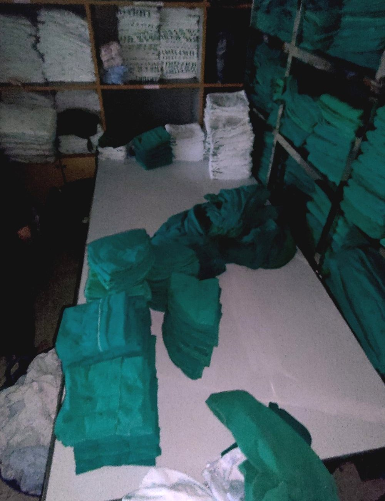
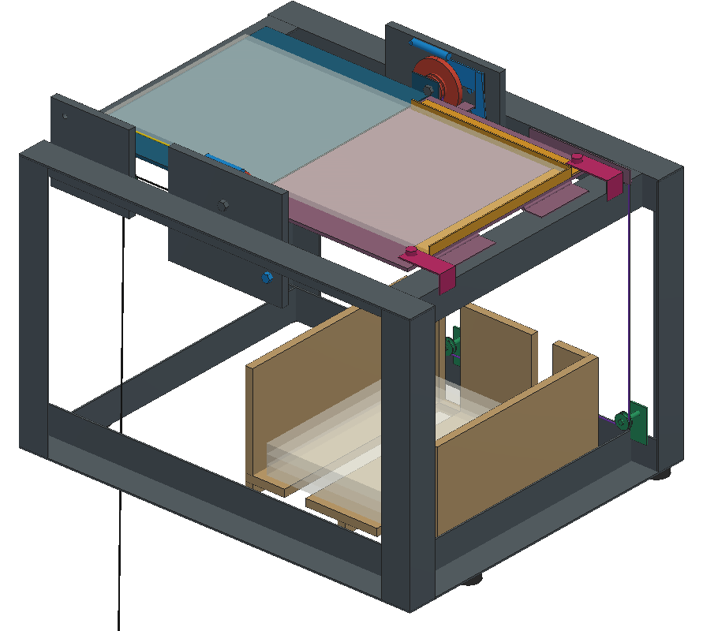
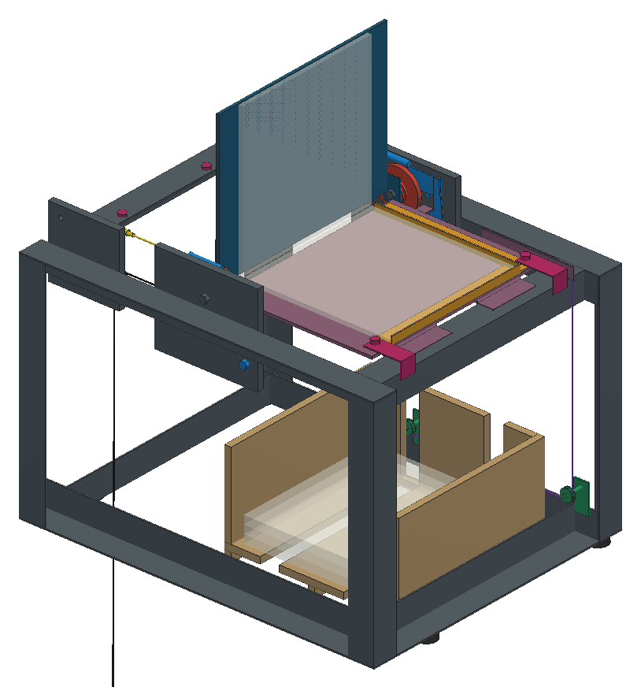
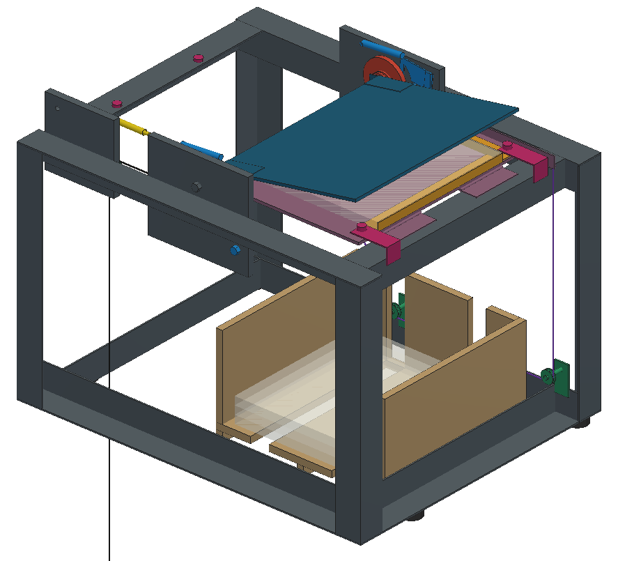
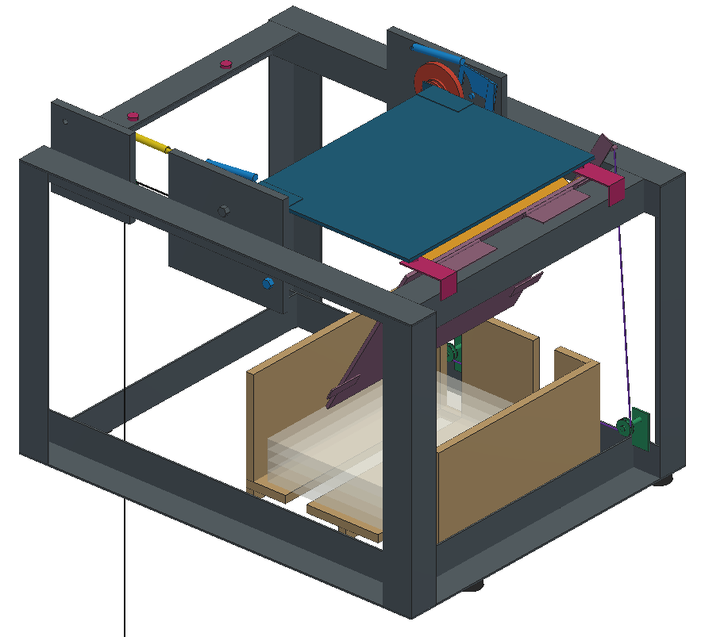
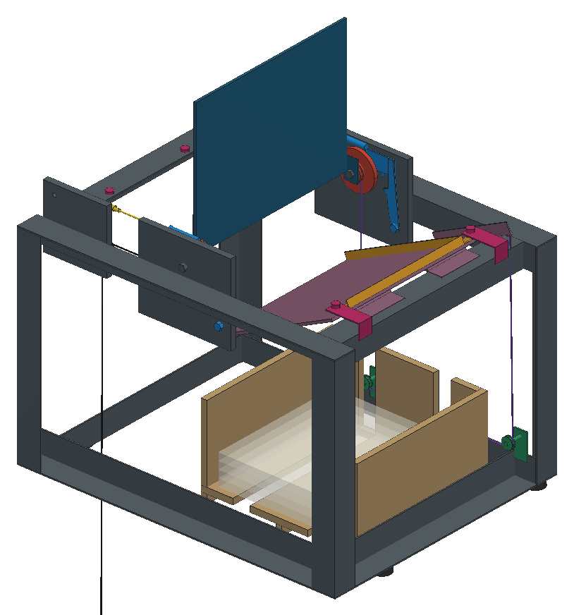
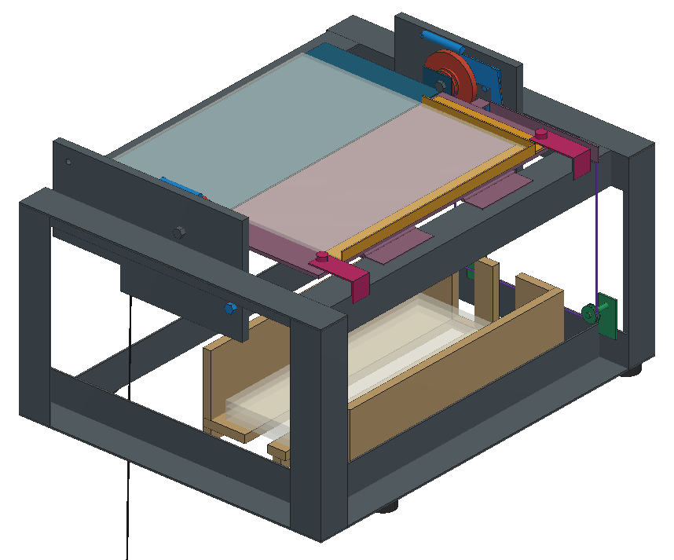
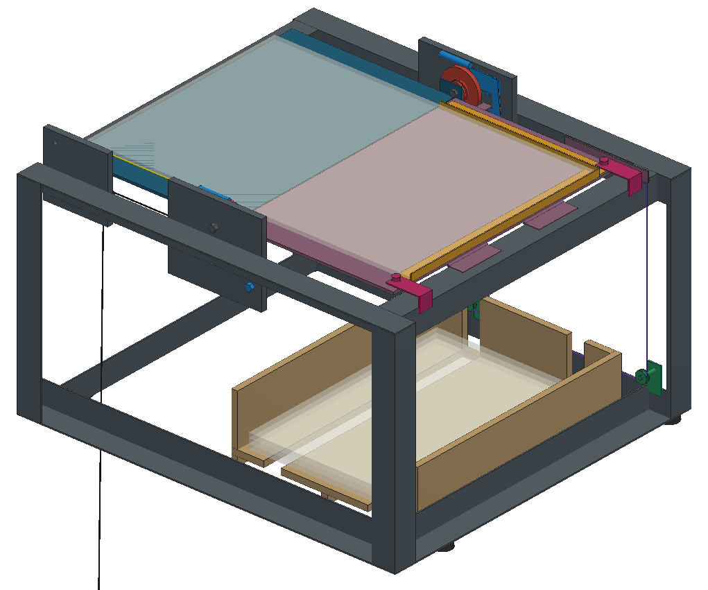
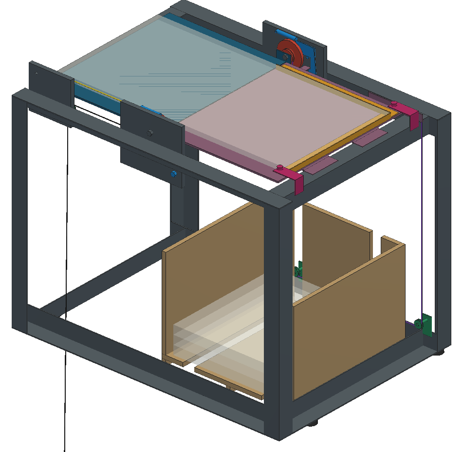
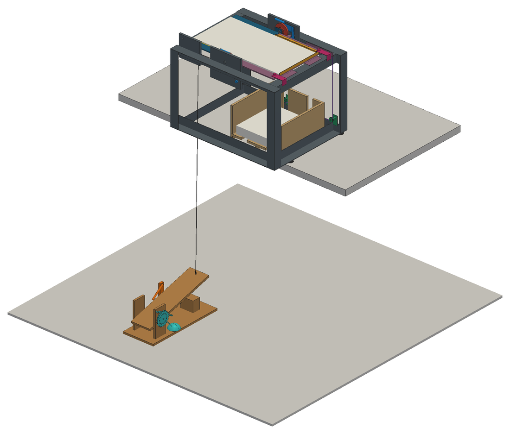

การนำเสนอความก้าวหน้าครั้งที่ 1 • โครงงาน MfE02/2026
การออกแบบและปรับปรุงกระบวนการพับผ้า
ในโรงพยาบาล : กรณีศึกษา
งานจ่ายผ้ากลาง โรงพยาบาลสงขลานครินทร์
นายจารุเดช เพชรวิโรจน์ 6610110039
นายพีรพัฒน์ ภักดีอักษร 6610110216
นายวรากร ปิยวิสุทธิรักษ์ 6610110634
นายวุฒิพงศ์ สนอยู่ 6610110642
อาจารย์ที่ปรึกษา รองศาสตราจารย์ วนิดา รัตนมณี
226-461 MANUFACTURING ENGINEERING PROJECT I • ภาคการศึกษาที่ 1 ปีการศึกษา 2569
หลักสูตรวิศวกรรมการผลิต คณะวิศวกรรมศาสตร์ มหาวิทยาลัยสงขลานครินทร์
หลักสูตรวิศวกรรมการผลิต คณะวิศวกรรมศาสตร์ มหาวิทยาลัยสงขลานครินทร์

15 ตุลาคม 2569
ความเป็นมาของปัญหา
กระบวนการพับมีผ้าค้างทุกวัน ณ เวลาปิดทำการ
รับ
ซัก
อบ
รีด
พับ (คอขวด)
จ่าย
ผ้าที่ซักภายในหน่วยงาน เฉลี่ย
7,836.10 กก./วัน
จ้างซักภายนอกอีกประมาณ 3,000 กก./วัน
•เครื่องอบ 16 เครื่อง ไม่มีผ้ารอเข้าอบ ผ้าจึงมารอที่กระบวนการพับ
•ขั้นตอนพับไม่มีการชั่งหรือนับผ้า จึงไม่มีข้อมูลเชิงปริมาณของกระบวนการ
•ผลกระทบ: ใช้พื้นที่วางผ้ารอพับ ผ้าสะอาดเสี่ยงปนเปื้อนซ้ำ และงานค้างสะสมไปวันถัดไป

ผ้ารอพับบนโต๊ะพับ งานจ่ายผ้ากลาง
โรงพยาบาลสงขลานครินทร์ 991 เตียง ผ้าหมุนเวียน 239 ชนิด
โรงพยาบาลสงขลานครินทร์ 991 เตียง ผ้าหมุนเวียน 239 ชนิด
MfE02/2026 • ความก้าวหน้าครั้งที่ 1
เป้าหมายของโครงงาน
วัตถุประสงค์ ขอบเขต และประโยชน์ที่คาดว่าจะได้รับ
วัตถุประสงค์
เพิ่มกำลังการผลิตของกระบวนการพับผ้า โดยลดปริมาณผ้าค้างพับ ณ เวลาปิดทำการ
ขอบเขต
•6 จาก 13 โซนการพับ ของงานจ่ายผ้ากลาง
•ผ้าชิ้นเดี่ยว 82 ชนิด เริ่มที่ ผ้ากลุ่ม A 17 ชนิด
•ไม่ลงทุนเครื่องจักรขนาดใหญ่ ไม่เพิ่มบุคลากร ไม่ขยายเวลาทำงาน
•วัดผลด้วยน้ำหนักผ้าค้างพับ 21 วันต่อเนื่อง ก่อนและหลังปรับปรุง ที่ระดับนัยสำคัญ 0.05
ประโยชน์ที่คาดว่าจะได้รับ
•มีวิธีวัดและค่าฐานเชิงปริมาณของกระบวนการพับ
•ลดพื้นที่วางผ้ารอพับและงานค้างสะสม
•ผ้าสะอาดรอพับสั้นลง ลดความเสี่ยงปนเปื้อนซ้ำ
•มีลำดับผ้าเป้าหมายตามน้ำหนักจากข้อมูล 8 เดือน
•ใช้ทรัพยากรเดิม พนักงานหมุนเวียนใช้ได้ทุกคน
MfE02/2026 • ความก้าวหน้าครั้งที่ 1
แผนการดำเนินงาน มิถุนายน 2569 ถึง มีนาคม 2570
งานถึงขั้นตอนที่ 5 และเริ่มขั้นตอนที่ 6 ก่อนแผน
ขั้นตอน
มิ.ย. 69
ก.ค. 69
ส.ค. 69
ก.ย. 69
ต.ค. 69
พ.ย. 69
ธ.ค. 69
ม.ค. 70
ก.พ. 70
มี.ค. 70
สถานะ
1 ศึกษาสภาพปัจจุบันและกำหนดปัญหา
เสร็จ ตามแผน
2 ศึกษาเอกสารและทฤษฎีที่เกี่ยวข้อง
กำลังดำเนินการ
4 เก็บข้อมูลก่อนปรับปรุง
เสร็จ ตามแผน
5 วิเคราะห์ข้อมูลและกำหนดเป้าหมาย
กำลังดำเนินการ
7 ทดลองปรับปรุงในหน่วยงานจริง
ยังไม่ถึงกำหนด
8 เก็บข้อมูลหลังปรับปรุง
ยังไม่ถึงกำหนด
9 วิเคราะห์ผลและสรุปผลการดำเนินงาน
ยังไม่ถึงกำหนด
10 จัดทำรายงานและนำเสนอ
กำลังดำเนินการ
แผน
ผลการดำเนินงาน
ปัจจุบัน สัปดาห์ที่ 1 ของ ต.ค. 69
ส่งรายงาน 12 ต.ค. | สอบ 15 ต.ค. | ส่งฉบับแก้ไข 22 ต.ค. 2569
MfE02/2026 • ความก้าวหน้าครั้งที่ 1
ผลการดำเนินงาน ขั้นตอนที่ 3 คัดเลือกกลุ่มผ้าเป้าหมาย
ผ้ากลุ่ม A 17 ชนิด คิดเป็นร้อยละ 79.05 ของน้ำหนักผ้าในขอบเขต
ผ้าทั้งหมดของหน่วยงาน
239 ชนิด
1,336,772.50 กก. (ม.ค.–ส.ค. 2569)
กลุ่ม
จำนวนชนิด
น้ำหนัก 8 เดือน (กก.)
ร้อยละของน้ำหนัก
ชนิดที่เสถียร
B
20
70,803.34
15.80
18
C
45
23,039.19
5.14
37
รวม
82
448,015.00
100.00
72
สัดส่วนน้ำหนักของผ้าชิ้นเดี่ยว 82 ชนิด
A ร้อยละ 79.05
B 15.80
C
•เกณฑ์น้ำหนักสะสม: กลุ่ม A ไม่เกินร้อยละ 80 กลุ่ม B ไม่เกินร้อยละ 95 กลุ่ม C ส่วนที่เหลือ
•ผ้ากลุ่ม A ทั้ง 17 ชนิดอยู่ในกลุ่มเดิมครบทั้ง 8 เดือน จึงใช้เป็นกลุ่มผ้าเป้าหมาย
MfE02/2026 • ความก้าวหน้าครั้งที่ 1
ผลการดำเนินงาน ขั้นตอนที่ 4 และ 5 เก็บข้อมูลก่อนปรับปรุงและกำหนดเป้าหมาย
ผ้าค้างพับเฉลี่ย 1,008.90 กก./วัน เป้าหมายคือไม่เกิน 853.34 กก./วัน
น้ำหนักผ้าค้างพับ ณ เวลาปิดทำการ ของ 6 โซน 21 วันต่อเนื่อง (กก./วัน)
ค่าเฉลี่ย 1,008.90
เป้าหมาย 853.34
สูงสุด 1,388.3
ต่ำสุด 751.9
ศ
ส
อา
จ
อ
พ
พฤ
ศ
ส
อา
จ
อ
พ
พฤ
ศ
ส
อา
จ
อ
พ
พฤ
21 ส.ค. ถึง 10 ก.ย. 2569 | ค่ารายวันทั้ง 21 วัน
MfE02/2026 • ความก้าวหน้าครั้งที่ 1
ผลการดำเนินงาน ขั้นตอนที่ 4 และ 5 บันทึกและวิเคราะห์ขั้นตอนการพับ
เวลาพับผ้ากลุ่ม A เป็นการพับจริงเพียงร้อยละ 29.7
เวลาพับผ้ากลุ่ม A รวม 1,600.5 นาที/วัน แยกตามลักษณะงาน
ก รอและทำซ้ำ
47.3 นาที/วัน (ร้อยละ 3.0)
ข ถือและจัดวางผ้า
679.9 (ร้อยละ 42.5)
ค พับจริง
474.9 (ร้อยละ 29.7)
ง หยิบและวาง
398.4 (ร้อยละ 24.9)
•บันทึกด้วยแผนภูมิสองมือ 13 ชุด และแผนภูมิกระบวนการไหล 2 ชุด ครบ 17 ชนิด
•กลุ่ม ข และ ค เป็นส่วนที่อุปกรณ์ช่วยพับลดเวลาได้
•เป็นเวลาที่สังเกตได้ ยังไม่ใช่เวลามาตรฐาน
MfE02/2026 • ความก้าวหน้าครั้งที่ 1
ผลการดำเนินงาน ขั้นตอนที่ 6 ออกแบบวิธีการปรับปรุง (เริ่มก่อนแผน)
ออกแบบเครื่องช่วยพับตั้งโต๊ะสำหรับผ้า 4 ชนิด
ผ้าที่เลือก เป็นผ้าผืนเรียบ เรียงตามเวลาถือ จัดวาง และพับ (กลุ่ม ข และ ค)
ชนิดผ้า
ข และ ค
(นาที/วัน)
(นาที/วัน)
จำนวน
(ชิ้น/วัน)
(ชิ้น/วัน)
เวลาพับ
(วินาที/ชิ้น)
(วินาที/ชิ้น)
ผ้าอ้อมใหญ่36"X36"
122.5
678.6
14.44
ปลอกหมอนใหญ่สีขาว18"X27"
93.4
698.5
11.03
ผ้าเช็ดตัว24"x48"
52.9
312.4
15.61
ผ้าเช็ดตัวสีขาว12"X12"
35.2
2,030.1
3.02
รวมผ้า 4 ชนิด
304.0
ค่าอ้างอิงของเป้าหมายคือ 156.2 นาที/วัน
•วางบนโต๊ะพับ ไม่เกิน 100 x 100 x 100 ซม.
•ผู้ปฏิบัติงาน 1 คน พนักงานหมุนเวียนใช้ได้ทุกคน
•รอบเวลาสั้นกว่าเวลาพับปัจจุบัน
•งบประมาณ 2,300 บาทต่อเครื่อง
•แยก 5 ฟังก์ชัน: ป้อนผ้า พับ นำผ้าออก นับ รวมเซต
•ฟังก์ชันละ 3 ทางเลือกขึ้นไป แยกตามชนิดผ้า
•ให้คะแนนด้วย 6 เกณฑ์ ถ่วงน้ำหนัก คะแนนเต็ม 5.00
MfE02/2026 • ความก้าวหน้าครั้งที่ 1
ผลการดำเนินงาน ขั้นตอนที่ 6 แนวคิดที่เลือก
แผ่นพับขับด้วยเท้าเหยียบ พับทบสุดท้าย ปล่อยผ้าลงช่องรับ และนับจำนวน

1 วางผ้าบนแท่น ชิดขอบกั้น 2 ด้าน

2 เหยียบคันเหยียบ ลวดสลิงดึงแผ่นพับให้หมุน

3 แผ่นพับทบผ้าลงบนบานรับ ที่ประมาณ 170 องศา หมุดปลดกลอน

4 บานรับเปิดลง ผ้าที่พับแล้วตกซ้อนในช่องรับใต้แท่น

5 ปล่อยเท้า สปริงดึงแผ่นพับกลับ บานรับปิด ล้อนับเดิน 1 ฟัน
ผู้ปฏิบัติงานพับทบแรกด้วยมือ เครื่องพับทบสุดท้าย
กระดิ่งดังทุก 10 ชิ้น มัดเซตได้โดยไม่ต้องนับ
ไม่ใช้ไฟฟ้าหรือลมอัด ใช้ได้ทุกจุดพับ
ภาพจาก แบบจำลอง 3 มิติ ของเครื่องสำหรับผ้าอ้อมใหญ่36"X36" เป็นแบบแนวคิด ยังไม่ใช่แบบสำหรับสร้าง
MfE02/2026 • ความก้าวหน้าครั้งที่ 1
ผลการดำเนินงาน ขั้นตอนที่ 6 แบบจำลอง 3 มิติและผลที่คาด
เครื่อง 4 เครื่อง คาดว่าลดเวลาพับได้ 131–176 นาที/วัน

ผ้าเช็ดตัวสีขาว12"X12"
ขนาด 39.7 x 50.5 x 30.8 ซม.
มวล (กก.)
8.4
เวลาปัจจุบัน (วินาที)
3.02
เวลาที่คาด (วินาที)
1.3–1.8
ลดได้ (นาที/วัน)
41–58

ปลอกหมอนใหญ่สีขาว18"X27"
ขนาด 64.8 x 58.4 x 42.3 ซม.
มวล (กก.)
11.9
เวลาปัจจุบัน (วินาที)
11.03
เวลาที่คาด (วินาที)
6.5–8.0
ลดได้ (นาที/วัน)
35–52
ผ้าอ้อมใหญ่36"X36"
ขนาด 55.0 x 44.2 x 42.3 ซม.
มวล (กก.)
9.8
เวลาปัจจุบัน (วินาที)
14.44
เวลาที่คาด (วินาที)
10.9–11.4
ลดได้ (นาที/วัน)
34–40

ผ้าเช็ดตัว24"x48"
ขนาด 70.2 x 51.8 x 59.8 ซม.
มวล (กก.)
13.3
เวลาปัจจุบัน (วินาที)
15.61
เวลาที่คาด (วินาที)
10.6–11.6
ลดได้ (นาที/วัน)
21–26
รวมคาดว่าลดได้ 131–176 นาที/วัน เทียบกับค่าอ้างอิง 156.2 นาที/วัน
ค่าประมาณ ยังไม่ได้ทดสอบ
ขนาดและมวลจาก แบบจำลอง 3 มิติ ไม่รวมชุดคันเหยียบ | แรงเหยียบและต้นทุนวัสดุ
MfE02/2026 • ความก้าวหน้าครั้งที่ 1
Backup10
สรุปความก้าวหน้า ถึงสัปดาห์ที่ 1 ของเดือนตุลาคม 2569
ได้ค่าฐาน เป้าหมาย กลุ่มผ้าเป้าหมาย และแนวคิดเครื่องช่วยพับ
ขั้นตอน
ผลที่ได้
สถานะ
1 ศึกษาสภาพปัจจุบัน
กระบวนการพับเป็นคอขวด กำหนดขอบเขต 6 จาก 13 โซนการพับ
เสร็จ
3 คัดเลือกกลุ่มผ้าเป้าหมาย
ผ้ากลุ่ม A 17 ชนิด ร้อยละ 79.05 ของน้ำหนักผ้าในขอบเขต
เสร็จ
4 เก็บข้อมูลก่อนปรับปรุง
ผ้าค้างพับ 21 วัน เฉลี่ย 1,008.90 กก./วัน และขั้นตอนการพับของผ้ากลุ่ม A ครบ 17 ชนิด
เสร็จ
5 วิเคราะห์ข้อมูลและกำหนดเป้าหมาย
เป้าหมายลดผ้าค้างพับ 155.56 กก./วัน เทียบเท่าเวลาพับ 156.2 นาที/วัน
กำลังดำเนินการ
6 ออกแบบวิธีการปรับปรุง
แนวคิดเครื่องช่วยพับ 4 เครื่อง พร้อมแบบจำลอง 3 มิติ คาดว่าลดได้ 131–176 นาที/วัน
เริ่มก่อนแผน
งานช่วงถัดไป
1แก้ปัญหาที่แบบจำลอง 3 มิติพบ และออกแบบรายละเอียด
2งานเสริมสำหรับเสื้อกาวน์สีขาว เพื่อให้ถึงเป้าหมาย
3ทดลองในหน่วยงานจริง และเก็บข้อมูลหลังปรับปรุง 21 วัน
MfE02/2026 • ความก้าวหน้าครั้งที่ 1
Backup11
ปัญหา อุปสรรค และแนวทางแก้ไข
ปัญหาที่พบ 6 เรื่อง และแนวทางแก้ไข
ปัญหาและอุปสรรค
แนวทางแก้ไข
1
ผ้าค้างพับปนกันหลายชนิด ชั่งแยกตามชนิดผ้าไม่ได้
ชั่งรวมตามโซน และจัดลำดับผ้าเป้าหมายจากข้อมูลการเบิก 8 เดือน
2
วิธีพับและจำนวนต่อเซตที่หน้างานต่างจากมาตรฐานการปฏิบัติงานในผ้า 2 ชนิด
เก็บข้อมูลหน้างาน หน่วยงานยืนยันว่ายอมรับได้ จึง ออกแบบตามวิธีหน้างาน
3
เครื่อง 2 เครื่อง เกินงบ 2,300 บาท และแรงเหยียบเกิน 90 นิวตัน
ลดคะแนนด้านต้นทุนตามจริง และปรับแบบหลังการสอบความก้าวหน้า
5
เวลาที่คาดว่าลดได้ ค่าต่ำสุดยังขาดประมาณ 25 นาที/วัน และเป็นค่าประมาณ
เพิ่มงานเสริมสำหรับเสื้อกาวน์สีขาว และจับเวลากับเครื่องจริง
6
ผ้าแต่ละชนิดมาไม่พร้อมกัน และ 1 คนพับผ้าหลายชนิดในกองเดียว เครื่อง 4 เครื่องจึงต้องใช้ 4 คน
พิจารณาเครื่องเดียวที่พับได้ทั้ง 4 ชนิด หลังการสอบความก้าวหน้า
MfE02/2026 • ความก้าวหน้าครั้งที่ 1
Backup12
MfE02/2026 ความก้าวหน้าครั้งที่ 1
Backup
หน้าที่นำเสนอ
ข้อมูลประกอบ
กดหัวข้อเพื่อไปยังหน้านั้น
13
Backup | ข้อมูลประกอบหน้า 3 และ 6
ที่มาของเป้าหมาย 155.56 กก./วัน
ใช้ผลต่างที่น้อยที่สุดที่ตรวจพบได้ (MDI) เป็นขนาดขั้นต่ำของการลดผ้าค้างพับ เพื่อให้แยกผลของการปรับปรุงออกจากความแปรปรวนรายวันได้
MDI = (Z1 + Z2) x SD x รากที่สองของ (2 / n)
= (1.6449 + 0.8416) x 202.73 x รากที่สองของ (2 / 21)
= 2.4865 x 202.73 x 0.3086
= 155.56 กก./วัน
•คิดเป็นร้อยละ 15.42 ของค่าเฉลี่ยก่อนปรับปรุง 1,008.90 กก./วัน
•ค่าเฉลี่ยหลังปรับปรุงต้องไม่เกิน 1,008.90 - 155.56 = 853.34 กก./วัน
•ผลรวมของค่า Z ปัดเป็น 2.49 ในรายงาน อ้างอิง Bloom (1995)
ระดับนัยสำคัญ 0.05 ด้านเดียว
สนใจเฉพาะการลดลงของผ้าค้างพับ ทิศทางกำหนดไว้ล่วงหน้า (Z1 = 1.6449)
อำนาจการทดสอบ ร้อยละ 80
เกณฑ์มาตรฐานของการออกแบบการทดลอง (Z2 = 0.8416)
SD = 202.73 กก./วัน
ส่วนเบี่ยงเบนมาตรฐานของผ้าค้างพับรายวันทุกโซน ในช่วงเวลาเดียวกัน
n = 21 วันต่อช่วง
เท่ากับจำนวนวันที่เก็บข้อมูลก่อนปรับปรุง
ถ้าใช้ SD ของ 6 โซนในขอบเขต (208.27 กก./วัน) จะได้ 159.82 กก./วัน หรือร้อยละ 15.84 ซึ่งใกล้เคียงกัน
Backup14
Backup | ข้อมูลประกอบหน้า 2, 3 และ 6
ที่มาของ 1,008.90 และ 853.34 กก./วัน
น้ำหนักผ้าค้างพับ ณ เวลาปิดทำการ รวม 6 โซนในขอบเขต (กก./วัน)
วัน
21–27 ส.ค.
28 ส.ค.–3 ก.ย.
4–10 ก.ย.
เฉลี่ยของวัน
ศุกร์
780.0
1,388.3
1,292.3
1,153.53
เสาร์
1,096.5
1,102.1
969.2
1,055.93
อาทิตย์
1,051.0
800.2
847.2
899.47
จันทร์
770.9
1,014.0
911.3
898.73
อังคาร
901.8
1,080.1
897.9
959.93
พุธ
800.3
1,236.8
832.2
956.43
พฤหัสบดี
1,384.8
1,278.0
751.9
1,138.23
21 ส.ค. ถึง 10 ก.ย. 2569 ชั่งรวมตามโซน ใช้ 443 รายการชั่ง
ค่าเฉลี่ย1,008.90
ส่วนเบี่ยงเบนมาตรฐาน208.27
ต่ำสุด และ สูงสุด751.9 และ 1,388.3
สัมประสิทธิ์การแปรผันร้อยละ 20.64
รวม 21 วัน21,186.8 กก.
Backup15
Backup | ข้อมูลประกอบหน้า 6
ที่มาของ F = 0.73 และ p = 0.6314
การวิเคราะห์ความแปรปรวนแบบทางเดียว เปรียบเทียบผ้าค้างพับของ 7 วันในสัปดาห์ วันละ 3 ค่า (F = MST / MSE)
แหล่งความแปรปรวน
SS
df
MS
F
p
ระหว่างวันในสัปดาห์
207,362.64
6
34,560.44
0.73
0.6314
ภายในวันเดียวกัน
660,200.07
14
47,157.15
รวม
867,562.71
20
ค่าเฉลี่ยของแต่ละวัน และส่วนเบี่ยงเบนมาตรฐานในวงเล็บ (กก./วัน)
จันทร์
898.73
(122.04)
อังคาร
959.93
(104.09)
พุธ
956.43
(243.33)
พฤหัสบดี
1,138.23
(338.81)
ศุกร์
1,153.53
(327.03)
เสาร์
1,055.93
(75.17)
อาทิตย์
899.47
(133.32)
•F = 0.73 น้อยกว่าค่าวิกฤต 2.85 ที่ระดับนัยสำคัญ 0.05 จึงไม่ปฏิเสธสมมติฐานว่าค่าเฉลี่ยของทั้ง 7 วันเท่ากัน
•แต่ละวันมีข้อมูล 3 ค่า จึงยังสรุปไม่ได้ว่าไม่แตกต่างกัน ข้อมูลหลังปรับปรุงจะเก็บให้ครบทุกวันในสัปดาห์เท่ากัน
กลับหน้าที่นำเสนอ6 ข้อมูลก่อนปรับปรุงและเป้าหมาย
Backup16
Backup | ข้อมูลประกอบหน้า 2 และ 3
ที่มาของขอบเขต 6 จาก 13 โซนการพับ
ในขอบเขต 6 โซน
โซนผ้าขาว
โซนเสื้อกาวน์
โซนผ้าสี่เหลี่ยมสีเขียว
โซนผ้าขนหนู
โซนผ้านอกรายการ
โซนเจ้าหน้าที่
นอกขอบเขต 7 โซน
โซนผ้าห่ม โซนผ้าขวาง โซนผ้าปู
ใช้เครื่องจักรขนาดใหญ่
โซนผ้าปลอดเชื้อ
เป็นห้องปลอดเชื้อ หน่วยงานไม่ให้เข้าไปดำเนินการ
โซนผ้าพิเศษ โซนผ้ายาง โซนผ้าพันแผล
ไม่มีผ้าค้างพับให้เก็บข้อมูล
จุดแยกผ้าเป็นจุดคัดแยกผ้า ไม่นับเป็นโซนการพับ
Backup17
Backup | ข้อมูลประกอบหน้า 5
ที่มาของ 82 ชนิด และร้อยละ 79.05
กลุ่มผ้า (ข้อมูลการเบิก ม.ค.–ส.ค. 2569)
จำนวนชนิด
น้ำหนัก 8 เดือน (กก.)
ร้อยละของน้ำหนัก
ผ้าชิ้นเดี่ยวในโซนที่อยู่ในขอบเขต
82
448,015.00
33.51
ผ้าชิ้นเดี่ยวในโซนที่อยู่นอกขอบเขต
85
802,326.42
60.02
ผ้าที่จัดเป็นชุดหรือมัด
72
86,431.08
6.47
รวม
239
1,336,772.50
100.00
ขั้นตอนการคัดเลือก
1แยกผ้าชิ้นเดี่ยว 167 ชนิด ออกจากผ้าที่จัดเป็นชุดหรือมัด 72 ชนิด
2เลือกผ้าชิ้นเดี่ยวที่พับใน 6 โซนในขอบเขต ได้ 82 ชนิด
3เรียงน้ำหนักจากมากไปน้อย กลุ่ม A สะสมไม่เกินร้อยละ 80 กลุ่ม B ไม่เกินร้อยละ 95
4วิเคราะห์ซ้ำรายเดือน ชนิดที่อยู่กลุ่มเดิมทุกเดือนถือว่าเสถียร
สัดส่วนน้ำหนักของผ้ากลุ่ม A
354,172.47 / 448,015.00 = ร้อยละ 79.05
จำนวนชนิดที่เสถียร
A 17 จาก 17 | B 18 จาก 20 | C 37 จาก 45
รวม 72 จาก 82 ชนิด คิดเป็นร้อยละ 87.80
กลับหน้าที่นำเสนอ5 กลุ่มผ้าเป้าหมาย
Backup18
Backup | ข้อมูลประกอบหน้า 3 และ 5
ผ้ากลุ่ม A 17 ชนิด เรียงตามน้ำหนักการเบิก 8 เดือน (กก.)
1
เสื้อกาวน์แขนยาวสีขาว
66,398.33
2
ถุงใส่ผ้าเปื้อนโพลีเอสเตอร์
58,815.90
3
ปลอกหมอนใหญ่สีขาว18"X27"
21,216.13
4
ผ้าอ้อมใหญ่36"X36"
20,611.88
5
ผ้าสี่เหลี่ยม2ชั้นสีเขียว45"X45"
20,098.40
6
ผ้าเช็ดตัว24"x48"
20,005.78
7
ชุดกิโมโนผู้ป่วยสีเขียว
19,824.00
8
เสื้อคนไข้
18,947.72
9
เสื้อผู้ป่วยอาการหนัก
18,565.36
10
ผ้าเช็ดตัวสีขาว12"X12"
15,913.19
11
ผ้าสี่เหลี่ยม2ชั้นสีเขียว36"X36"
13,950.50
12
กางเกงแพทย์ชายสีเขียว L
11,890.00
13
เสื้อเจ้าหน้าที่สีฟ้า XL
10,929.00
14
เสื้อกาวน์แขนสั้นสีขาว
10,641.68
15
ผ้าเช็ดมือมีหู 36"
10,063.70
16
เสื้อกาวน์ปลายแขนยืดสีเขียว
8,918.40
17
ผ้าปูเตียงTreatmentสีขาว
7,382.50
รวม 17 ชนิด
354,172.47
ข้อมูล ม.ค.–ส.ค. 2569 | ตัวอักษรสีเขียว คือผ้า 4 ชนิดที่เลือกออกแบบเครื่องช่วยพับ
Backup19
Backup | ข้อมูลประกอบหน้า 4
ผลการดำเนินงานเทียบกับแผนรายขั้นตอน
ขั้นตอน
แผน
ผลการดำเนินงาน
หมายเหตุ
1 ศึกษาสภาพปัจจุบันและกำหนดปัญหา
มิ.ย./1 – ส.ค./4
มิ.ย./1 – ส.ค./4
เสร็จ ตามแผน
2 ศึกษาเอกสารและทฤษฎีที่เกี่ยวข้อง
มิ.ย./1 – ก.ย./4
มิ.ย./1 – ต.ค./1
กำลังดำเนินการ เกินแผน 1 สัปดาห์
3 คัดเลือกกลุ่มผ้าเป้าหมาย
ส.ค./3 – ก.ย./2
ส.ค./3 – ต.ค./1
เสร็จ ช้ากว่าแผน 3 สัปดาห์ เพราะปรับขอบเขตของโซนการพับ และคำนวณการจัดกลุ่มผ้าใหม่
4 เก็บข้อมูลก่อนปรับปรุง
ส.ค./3 – ต.ค./1
ส.ค./3 – ต.ค./1
เสร็จ ตามแผน
5 วิเคราะห์ข้อมูลและกำหนดเป้าหมาย
ก.ย./1 – ต.ค./4
ก.ย./3 – ต.ค./1
กำลังดำเนินการ อยู่ในช่วงของแผน
6 ออกแบบวิธีการปรับปรุง
พ.ย./1 – พ.ย./4
เริ่ม ต.ค./1
เริ่มก่อนแผน ได้แนวคิดเครื่องช่วยพับและแบบจำลอง 3 มิติ การออกแบบรายละเอียดทำต่อตามแผน
7 ถึง 9 ทดลอง เก็บข้อมูล และสรุปผล
ธ.ค./1 – มี.ค./4
ยังไม่ถึงกำหนด
10 จัดทำรายงานและนำเสนอ
มิ.ย./1 – มี.ค./4
มิ.ย./1 – ต.ค./1
กำลังดำเนินการ
ส.ค./3 หมายถึงสัปดาห์ที่ 3 ของเดือนสิงหาคม 2569 | ข้อมูลถึงสัปดาห์ที่ 1 ของเดือนตุลาคม 2569
กลับหน้าที่นำเสนอ4 แผนการดำเนินงาน
Backup20
Backup | ข้อมูลประกอบหน้า 7
ที่มาของเวลาพับผ้ากลุ่ม A 1,600.5 นาที/วัน
ชนิดผ้า
วินาที/ชิ้น
ชิ้น/วัน
นาที/วัน
เสื้อกาวน์สีขาว แขนยาวและแขนสั้น
27.82
979.0
453.9
เสื้อผู้ป่วยอาการหนัก และเสื้อคนไข้
15.75
701.7
184.2
ผ้าอ้อมใหญ่36"X36"
14.44
678.6
163.4
ปลอกหมอนใหญ่สีขาว18"X27"
11.03
698.5
128.4
ถุงใส่ผ้าเปื้อนโพลีเอสเตอร์
13.60
558.6
126.6
ผ้าเช็ดตัวสีขาว12"X12"
3.02
2,030.1
102.3
ชุดกิโมโนผู้ป่วยสีเขียว
24.73
244.7
100.9
ผ้าเช็ดมือมีหู 36"
12.33
414.1
85.1
ชนิดผ้า
วินาที/ชิ้น
ชิ้น/วัน
นาที/วัน
ผ้าเช็ดตัว24"x48"
15.61
312.4
81.3
กางเกงแพทย์ชายสีเขียว L
10.32
244.7
42.1
เสื้อกาวน์ปลายแขนยืดสีเขียว
27.04
91.8
41.4
ผ้าปูเตียงTreatmentสีขาว
33.72
60.8
34.1
ผ้าสี่เหลี่ยม2ชั้นสีเขียว45"X45"
7.91
206.8
27.3
ผ้าสี่เหลี่ยม2ชั้นสีเขียว36"X36"
5.38
229.6
20.6
เสื้อเจ้าหน้าที่สีฟ้า XL
12.25
45.0
9.2
รวมผ้ากลุ่ม A
1,600.5
นาที/วัน = วินาที/ชิ้น x ชิ้น/วัน / 60 คำนวณจากค่าก่อนปัดเศษ | ชิ้น/วัน จากข้อมูลการเบิก 8 เดือน | สีเขียว คือผ้าที่เลือกออกแบบเครื่องช่วยพับ
กลับหน้าที่นำเสนอ7 เวลาการพับของผ้ากลุ่ม A
Backup21
Backup | ข้อมูลประกอบหน้า 7
ที่มาของ 0.996 กก. ต่อนาที และ 156.2 นาที/วัน
ผ้าค้างพับชั่งรวมตามโซน ไม่แยกชนิดผ้า จึงใช้อัตราร่วมของผ้ากลุ่ม A แปลงเป้าหมายจากน้ำหนักเป็นเวลาพับ
1
น้ำหนักผ้ากลุ่ม A ที่พับต่อวัน เท่ากับผลรวมของ ชิ้น/วัน x น้ำหนักต่อชิ้นที่ชั่งจริง ครบ 17 ชนิด
1,594.35 กก./วัน
2
เวลาพับผ้ากลุ่ม A จากการบันทึกขั้นตอนการพับ
1,600.5 นาที/วัน
3
อัตราร่วม เท่ากับ 1,594.35 / 1,600.5
0.996 กก. ต่อนาที
4
เวลาพับที่ต้องลด เท่ากับ 155.56 / 0.996
156.2 นาที/วัน
•156.2 นาที/วัน คิดเป็นร้อยละ 9.8 ของเวลาพับผ้ากลุ่ม A
•น้ำหนักต่อชิ้นได้จากการชั่งผ้าชนิดละ 10 ชิ้น | เวลาพับรายชนิดผ้า | ที่มาของ 155.56
กลับหน้าที่นำเสนอ7 เวลาการพับของผ้ากลุ่ม A
Backup22
Backup | ข้อมูลประกอบหน้า 8
ที่มาของผ้า 4 ชนิดที่เลือกออกแบบเครื่องช่วยพับ
พิจารณาผ้าผืนเรียบในกลุ่ม A เรียงตามเวลากลุ่ม ข (ถือและจัดวางผ้า) และ ค (พับจริง) ซึ่งเป็นเวลาที่เครื่องช่วยพับลดได้
ชนิดผ้า
ข และ ค (นาที/วัน)
ผลการพิจารณา
ผ้าอ้อมใหญ่36"X36"
122.5
เลือก
ปลอกหมอนใหญ่สีขาว18"X27"
93.4
เลือก
ถุงใส่ผ้าเปื้อนโพลีเอสเตอร์
93.3
ไม่เสนอ เพราะมีสายผูก
ผ้าเช็ดตัว24"x48"
52.9
เลือก
ผ้าเช็ดมือมีหู 36"
52.9
ยังไม่ทำในรอบนี้
ผ้าเช็ดตัวสีขาว12"X12"
35.2
เลือก ตามคำแนะนำของอาจารย์ที่ปรึกษา
•ผ้า 4 ชนิดที่เลือกมีเวลากลุ่ม ข และ ค รวม 304.0 นาที/วัน เทียบกับค่าอ้างอิงของเป้าหมาย 156.2 นาที/วัน
•เสื้อกาวน์สีขาวใช้เวลาพับมากที่สุด 453.9 นาที/วัน กำหนดเป็นงานเสริมหลังการสอบความก้าวหน้า
กลับหน้าที่นำเสนอ8 ผ้าและเงื่อนไขการออกแบบ
Backup23
Backup | ข้อมูลประกอบหน้า 8 และ 12
เงื่อนไขการออกแบบ 8 ข้อ และผลตรวจกับแบบจำลอง
เงื่อนไข
ผลตรวจ
T1
ขนาดไม่เกิน 100 x 100 x 100 ซม. ต่อเครื่อง
ผ่าน
T2
ส่วนที่วางบนโต๊ะหนักไม่เกิน 100 กก.
ผ่าน (7.46 ถึง 12.38 กก.)
T3
ขนาดผ้า ขนาดหลังพับ และจำนวนต่อเซต ตามวิธีที่หน้างาน
ตรง ยกเว้นเครื่องผ้าอ้อมใหญ่ยังใช้ 22.9 x 22.9 ซม. (วัดได้ 22.9 x 25.9)
T4
รอบเวลาสั้นกว่าเวลาพับปัจจุบัน
คาดว่าผ่าน ยังไม่ได้จับเวลา
T5
ผิวที่สัมผัสผ้าเรียบ ไม่เป็นสนิม ทำความสะอาดได้
ใช้แผ่นอะลูมิเนียมคอมโพสิต ยังไม่ได้ทดสอบการทำความสะอาด
T6
ใช้พลังงานที่มีอยู่ ณ จุดพับเท่านั้น
ผ่าน ไม่ใช้ไฟฟ้าหรือลมอัด
T7
ผู้ปฏิบัติงาน 1 คน แรงเหยียบ 18 ถึง 90 นิวตัน ระยะเหยียบ 13 ถึง 65 มม. (MIL-STD-1472H)
วิธีที่หน้างานต่างจากมาตรฐานการปฏิบัติงาน: ผ้าเช็ดตัว24"x48" พับครึ่ง 3 ครั้ง ไม่รวมเซตและไม่ใส่ถุง | ผ้าเช็ดตัวสีขาว12"X12" มัดเซตละ 10 ชิ้น (มาตรฐานกำหนด 20 ชิ้น) | หน่วยงานยืนยันว่ายอมรับได้
Backup24
Backup | ข้อมูลประกอบหน้า 8
เกณฑ์ น้ำหนัก และคะแนนของทางเลือก
เกณฑ์ 6 ข้อและน้ำหนัก (ให้คะแนน 1 ถึง 5 ต่อเกณฑ์ คูณน้ำหนัก รวมเต็ม 5.00)
ความเร็ว
ร้อยละ 30
ร้อยละ 30
ต้นทุน
ร้อยละ 25
ร้อยละ 25
ขนาดและน้ำหนัก
ร้อยละ 15
ร้อยละ 15
ความง่ายในการสร้าง
ร้อยละ 15
ร้อยละ 15
การใช้และความปลอดภัย
ร้อยละ 10
ร้อยละ 10
ความสะอาด
ร้อยละ 5
ร้อยละ 5
คะแนนรวมของฟังก์ชันพับ
2A
2B
2C
2D
ผ้าเช็ดตัวสีขาว12"X12"
4.05 (เลือก)
3.50
3.85
3.85
ปลอกหมอนใหญ่สีขาว18"X27"
2.30
2.70
3.00
3.85 (เลือก)
ผ้าอ้อมใหญ่36"X36"
2.00
3.50
3.40
4.20 (เลือก)
ผ้าเช็ดตัว24"x48"
2.00
2.45
2.85
3.30 (เลือก)
•ผ้าเช็ดตัวสีขาว12"X12": 2A แผ่นพับขับด้วยเท้าเหยียบ | 2B ลมอัด | 2C เซอร์โวมอเตอร์ | 2D ใบกดผ้าลงร่อง
•ผ้าอีก 3 ชนิด: 2D ผู้ปฏิบัติงานพับทบแรก เครื่องพับทบสุดท้ายด้วยแผ่นพับเดียว | 2A ถึง 2C เครื่องพับมากกว่า 1 ทบ ต้องใช้แท่นใหญ่ขึ้น
ทางเลือกที่ได้คะแนนสูงสุดของฟังก์ชันอื่น เหมือนกันทั้ง 4 เครื่อง
1A | 4.30
วางด้วยมือบนแท่นราบ มีขอบกั้น 2 ด้าน
วางด้วยมือบนแท่นราบ มีขอบกั้น 2 ด้าน
3B | 3.95
บานรับเปิดลง ผ้าตกซ้อนใต้แท่น
บานรับเปิดลง ผ้าตกซ้อนใต้แท่น
4B | 4.60
ล้อนับแบบกลไก มีกระดิ่ง
ล้อนับแบบกลไก มีกระดิ่ง
5A | 4.30
ช่องรับกองมีร่อง 2 ข้าง
ช่องรับกองมีร่อง 2 ข้าง
กลับหน้าที่นำเสนอ8 ผ้าและเงื่อนไขการออกแบบ
Backup25
Backup | ข้อมูลประกอบหน้า 9, 10 และ 12
ผลจากแบบจำลอง 3 มิติของเครื่อง 4 เครื่อง
รายการ
ผ้าเช็ดตัว
12"X12"
12"X12"
ปลอกหมอน
18"X27"
18"X27"
ผ้าอ้อมใหญ่
36"X36"
36"X36"
ผ้าเช็ดตัว
24"x48"
24"x48"
กว้าง (ซม.)
39.7
64.8
55.0
70.2
ลึก (ซม.)
50.5
58.4
44.2
51.8
สูง (ซม.)
30.8
42.3
42.3
59.8
สูงเมื่อแผ่นพับตั้ง 90 องศา (ซม.)
42.1
66.1
61.2
86.3
แท่นวางผ้าสูงจากโต๊ะ (ซม.)
26.0
37.5
37.5
54.5
มวลรวม (กก.)
8.4
11.9
9.8
13.3
มุมของแผ่นพับตอนกลอนปลด (องศา)
170.01
170.05
170.05
171.56
มุมเปิดของบานรับ (องศา)
58.16
58.96
58.96
59.52
ปัญหาของกลไกที่แบบจำลองพบ กำหนดแก้หลังการสอบความก้าวหน้า
•กลอนล็อกกลับได้เมื่อบานรับปิดถึง 0 องศาพอดี ยังไม่มีระยะเผื่อ
•สปริงดึงแผ่นพับกลับยังไม่มีแรงขณะแผ่นพับราบ
•เมื่อกลอนปลด บานรับตกอิสระประมาณ 54 องศาก่อนเชือกรั้ง ยังไม่ได้คิดแรงกระแทก

เครื่องสำหรับผ้าอ้อมใหญ่36"X36" วางบนโต๊ะสูง 80 ซม. ชุดคันเหยียบอยู่บนพื้น
จำลอง 6 ท่าของ 1 รอบการทำงาน ไม่พบชิ้นส่วนชนกัน | ขนาดไม่รวมชุดคันเหยียบ 18.0 x 39.0 x 16.9 ซม.
Backup26
Backup | ข้อมูลประกอบหน้า 10 และ 12
ที่มาของเวลาที่คาดว่าลดได้ 131–176 นาที/วัน
ชนิดผ้า
ส่วนที่ผู้ปฏิบัติงานทำก่อนวางผ้า
ลดได้
(วินาที/ชิ้น)
(วินาที/ชิ้น)
ชิ้น/วัน
ลดได้
(นาที/วัน)
(นาที/วัน)
เวลาต่อชิ้น (วินาที)
ปัจจุบัน และที่คาด
ปัจจุบัน และที่คาด
ผ้าเช็ดตัวสีขาว12"X12"
ไม่มี วางทั้งผืน
1.2–1.7
2,030.1
41–58
3.02 เหลือ 1.3–1.8
ปลอกหมอนใหญ่สีขาว18"X27"
สะบัดและพับทบแรก
3–4.5
698.5
35–52
11.03 เหลือ 6.5–8.0
ผ้าอ้อมใหญ่36"X36"
พับ 3 ทบแรก
3–3.5
678.6
34–40
14.44 เหลือ 10.9–11.4
ผ้าเช็ดตัว24"x48"
พับครึ่ง 2 ครั้ง
4–5
312.4
21–26
15.61 เหลือ 10.6–11.6
รวม 4 เครื่อง
131–176
•ลดได้ (นาที/วัน) = วินาทีที่ลดได้ต่อชิ้น x ชิ้น/วัน / 60 | เวลาที่ลดมาจากการพับทบสุดท้าย การวางกอง และการนับ
•เทียบกับค่าอ้างอิง 156.2 นาที/วัน ค่าต่ำสุด 131 ยังขาดประมาณ 25 นาที/วัน จึงมีงานเสริมสำหรับเสื้อกาวน์สีขาว
•เป็นค่าประมาณจากเวลาของแต่ละขั้นในแผนภูมิสองมือ ต้องจับเวลากับเครื่องจริงก่อนใช้เป็นผล
Backup27
Backup | ข้อมูลประกอบหน้า 10 และ 12
แรงเหยียบที่คำนวณได้ และประมาณการต้นทุนวัสดุ
รายการ
ผ้าเช็ดตัว
12"X12"
12"X12"
ปลอกหมอน
18"X27"
18"X27"
ผ้าอ้อมใหญ่
36"X36"
36"X36"
ผ้าเช็ดตัว
24"x48"
24"x48"
แรงเหยียบ เมื่อพับช้า (นิวตัน)
22.3
92.0
44.1
99.2
แรงเหยียบ เมื่อพับเร็ว (นิวตัน)
32.0
165.6
74.1
189.9
เทียบเกณฑ์ 18 ถึง 90 นิวตัน
ผ่าน
เกิน
ผ่าน
เกิน
ต้นทุนวัสดุ (บาท)
1,875–2,092
2,433–2,650
1,935–2,152
2,596–2,813
เทียบงบ 2,300 บาทต่อเครื่อง
อยู่ในงบ
เกิน 133–350
อยู่ในงบ
เกิน 296–513
•ต้นทุนวัสดุรวม 4 เครื่อง 8,839–9,707 บาท เทียบกับงบ 9,200 บาท ไม่รวมค่าตัดเลเซอร์และค่าขนส่ง
•ระยะเหยียบ 65.4 มม. เกินเกณฑ์ 65 มม. อยู่ 0.4 มม. | เกณฑ์แรงและระยะเหยียบจาก MIL-STD-1472H
•วัสดุหลัก: แผ่นอะลูมิเนียมคอมโพสิต 4 มม. เหล็กฉากเจาะรู ไม้อัด 10 มม. ลวดสลิงสเตนเลส 2 มม. และสปริงดึง
•เครื่อง 2 เครื่องที่เกินได้คะแนนเกณฑ์ต้นทุนลดลงแล้ว และกำหนดปรับแบบด้วยแบบจำลอง 3 มิติหลังการสอบความก้าวหน้า
Backup28